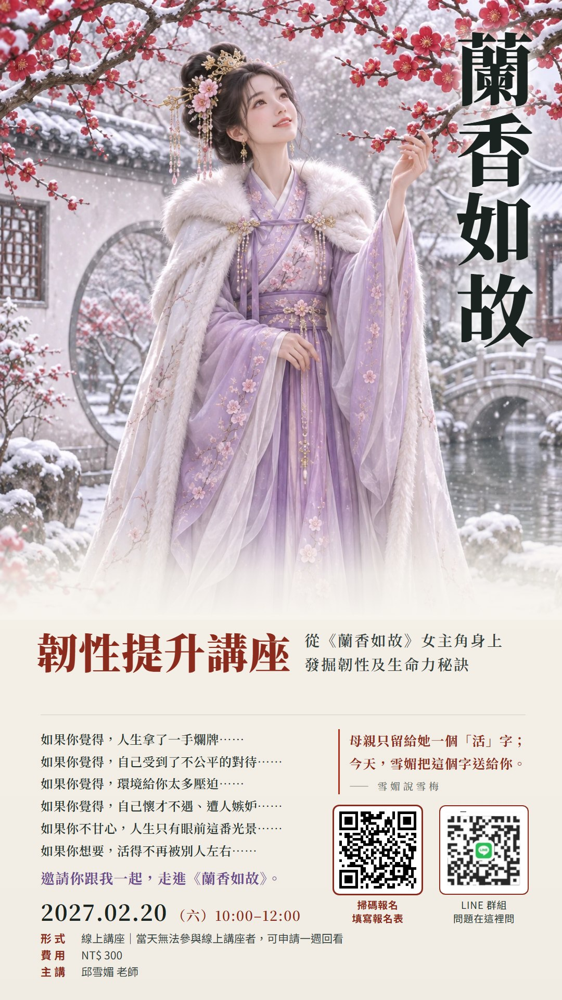

黑暗趕不走，把光放進來就好了！
很多人來找我聊的時候，第一句話常常是：「老師，我要怎麼樣才能不痛苦？」
我很能理解！誰不想要痛苦趕快消失？但是，親愛的朋友們，我想先問大家一個問題：你有辦法把一個房間裡的黑暗「趕出去」嗎？
用掃把掃？用手揮？對著黑暗大罵：你給我走開！！
黑暗一點都不會少！
可是，只要「啪」一聲打開電燈，或者點一根小小的蠟燭，黑暗馬上就退開了。我們根本沒有跟黑暗打架，只是把光放進去而已！
心裡的痛苦也是這樣。想要「消滅痛苦」的人，常常越用力越痛；把力氣放在「提升韌力」、把光放進來的人，黑暗反而自己退了。
越複習，越記得！
我是幼教科班出身的，小時候大家都背過書吧？老師一定會說：要一直複習、一直複習，才記得住！複習十遍的，一定比只看一遍的記得牢。
親愛的，大腦就是這麼聽話！
痛苦的回憶也一樣。當我們一遍又一遍地想：他那天說了哪一句話、那個表情、那個語氣，我那時候有多委屈，如果當初怎樣就好了……每想一次，就是在幫這件事「複習」一次！等於在告訴大腦：這件事很重要喔，千萬不要忘記！
大腦就乖乖地把它記得更牢、更清楚了。
就像草地上本來沒有路，同一個地方一直走、一直走，草被踩平了，就成了一條小路。以後不用刻意，腳自己就往那裡走。痛苦的小路踩得越深，我們就越常不知不覺走回去。
更辛苦的是，回想的時候，身體也會跟著再經歷一次：心跳變快、胸口悶悶的、晚上睡不著。事情明明只發生一次，我們卻在心裡重播了一百次，等於被傷了一百次！！
這不是說痛苦不能說。好好哭一場、找一個願意聽你說的朋友，被陪伴著說出來，是非常重要的。但是「被陪伴著說出來」跟「自己一個人一直在心裡重播」，真的不一樣。前者讓心慢慢鬆開，後者讓人越陷越深。
身體強壯，病菌就沒那麼可怕
大家都知道，我們不可能把世界上所有的病菌都消滅。但是身體強壯的人，睡得好、吃得好、有運動，同樣的感冒來了，躺一兩天就好了；身體虛弱的人，可能就拖很久。
心靈也是一樣！人生的風雨不會因為我們不喜歡就不來，失落、誤會、病痛、離別，總有一天會敲門。但是，當我們內在的韌性力量提高了，同樣的事情來了，痛苦的感受自然就變小，也比較快站起來。
我們沒辦法讓人生沒有風雨，但是我們可以讓自己更有力量走過風雨！
停電的時候，你在找什麼？
大家應該都有過停電的經驗吧？一停電，眼前一片漆黑，這時候你會做什麼？
我想沒有人會坐在原地研究：這個黑到底有多黑？為什麼會這麼黑？是誰害我這麼黑？
我們做的第一件事，就是摸摸找找：手電筒在哪裡？手機在哪裡？蠟燭放哪裡去了？
找到光，路就看得見了！
在黑暗中想找一條路，最快的真的不是研究黑暗，而是找光！
只要今天沒有被打倒，我就還有明天
說到這裡，我想跟大家說說我自己。
我也曾經在極度的黑暗跟痛苦中，黑到完全看不見路，完全沒有辦法自救！那時候，我沒有力氣去想明年、下個月，甚至明天要怎麼辦。
所以我把全部的力量，只放在一件事情上：我只要能夠過好這一天！只要今天沒有被打倒，我就還有明天！
一天一天，我就這麼走過來了。
現在回頭看，那一個又一個「只要過好今天」，就是我在最黑的時候，為自己點起的一根小蠟燭。光雖然小小的，只照得到眼前一步，但是夠了！一步一步，就走出來了！
最近看《蘭香如故》，我好有共鳴！劇中的女主角一夜之間失去了全族，頂著別人的名字，成了最卑微的奴婢，她手上的牌，比我們大多數人都爛！可是她憑著母親留給她的一個「活」字，憑著要好好活下去的信念，從一個脆弱無助的生命，慢慢長出許多韌性跟力量，不但活了下來，還活得發光發亮！
她沒有把力氣花在消滅黑暗，而是一天一天，讓自己更有力量。這不就是韌力提升嗎？
把思念放在對的地方
保羅在監獄裡寫信給腓立比的信徒，給了我們一個很實際的提醒：
弟兄們，我還有未盡的話：凡是真實的、可敬的、公義的、清潔的、可愛的、有美名的，若有什麼德行，若有什麼稱讚，這些事你們都要思念。（腓立比書 4:8）
保羅沒有說「你們不要想壞事」，他說的是：這些美好的事，你們要去『思念』！
這不就是在大腦裡踩出一條新的小路嗎？我們常常思念什麼，那條路就越來越好走。今天開始，不用跟痛苦的念頭打架，只要發現自己又走回那條老路時，溫柔地跟自己說：「我又走到舊路上了，換個方向吧！」然後把注意力轉向一件真實、美好的事。
一次、兩次、十次、一百次……新的路就這樣慢慢被踩出來了！
親愛的朋友們，如果你正在一個很黑很黑的地方，請相信你不孤單。我們不需要用盡力氣去消滅黑暗，只要先過好今天，一點一點地，讓光進來。光多一點，黑暗就少一點！
非常歡迎大家利用現在到過年的這段時間，把《蘭香如故》看完！年後，我要跟大家一起來解鎖：劇中女主角的韌性力量，到底是怎麼一次又一次不斷提升的？秘訣是什麼？講座資訊和報名連結就附在文章下面喔！
耶穌又對眾人說：「我是世界的光。跟從我的，就不在黑暗裡走，必要得著生命的光。」（約翰福音 8:12）
《心路新路專欄文章介紹》
每個人都有一個想要達到的目標、地方，並為此努力著。但是，走著走著，有時會感到對前方感到迷惘、困惑、疲累，甚至發現自己不見了！此時，需要重新找到『心路』：與自己內心連結之路。重新好好認識自己，除了自己在想什麼、如何感受這個世界以外，更重要的，找回自己受造之初、與生俱來的本質及祝福。當人可以找到自己原來的樣子，一條嶄新的、喜樂的、有盼望的、有力量的、回到上帝創造心意的『新路』，也即將開啟。
歡迎到作者邱雪媚的FB進行交流。

韌力提升系列講座
從《蘭香如故》女主角身上發掘韌性及生命力秘訣
如果你覺得，人生拿了一手爛牌……
如果你覺得，自己受到了不公平的對待……
如果你覺得，環境給你太多壓迫……
如果你覺得，自己懷才不遇、遭人嫉妒……
如果你不甘心，人生只有眼前這番光景……
如果你想要，活得不再被別人左右……
邀請你跟我一起，走進《蘭香如故》。
面對艱難的處境，多數人會有兩極化的反應：一個是壓抑忍耐，一個是崩潰爆炸。《蘭香如故》劇中的女主角沒有出現這兩種極端。為了已故母親以及慈愛養母勉勵她「好好活」，她展現了超強韌性，並運用許多策略，以至於不但活了下來，活得開心，而且活得發光發亮。讓我們藉著這部美麗、優質的戲劇作品，陪你找到好好活的力量。
講座資訊
時間：2027 年 2 月 20 日（六）上午 10:00–12:00
形式：線上講座；當天無法參與者，可申請一週回看
費用：NT$300
主講：邱雪媚 老師
行前準備：建議先看完整部《蘭香如故》。如不知道如何收看，請到 LINE 小幫手詢問。
這兩個小時，我們會談
- 一手爛牌，第一步是先活下來
- 拿回自己的名字，別人的標籤不是你
- 同樣的痛苦，為什麼有人走進死胡同，有人走出一條路
- 不吵架、不硬碰，也能改變局面
- 從小累積的本事，會在最難的時候救你
- 讓活得好的渴望高於一切
報名方式
- 匯款 NT$300 到下方帳戶
- 填寫報名表單（匯款日期、帳號後五碼）
- 確認款項後，會寄確認信到您的 Email；講座當天會把線上連結寄到同一個 Email
帳號：132-50-013341-8
戶名：邱雪媚
匯款時請註明姓名以及「韌力提升系列講座20270220」